import pandas as pd
import numpy as np
import statistics
import math
import missingno as msno
import seaborn as sns
import matplotlib.pyplot as plt
import osHelios Corn Futures Data Challenge (EDA)
code
analysis
Exploratory Data Analysis (EDA) Contents
- Nullity Analysis
- Time Series Plots
- Scatterplots
- Distributional Plots
Import Libraries
Import Main Dataset
raw_data = pd.read_csv('corn_climate_risk_futures_daily_master.csv')
raw_data.head()| ID | crop_name | country_name | country_code | region_name | region_id | harvest_period | growing_season_year | date_on | climate_risk_cnt_locations_heat_stress_risk_low | ... | futures_zc1_ma_120 | futures_zc1_vol_20 | futures_zc1_vol_60 | futures_zw_zc_spread | futures_zc_zw_ratio | futures_zs_zc_spread | futures_zc_zs_ratio | date_on_year | date_on_month | date_on_year_month | |
|---|---|---|---|---|---|---|---|---|---|---|---|---|---|---|---|---|---|---|---|---|---|
| 0 | 8af42722-3f05-4ede-80fc-605e0e2b3b67 | Corn: Commodity Tracked | Argentina | AR | Buenos Aires | bffad37a-7c60-432f-984a-8ea83a944311 | Harvest | 2017 | 2016-06-15 | 23 | ... | 375.014583 | 0.013520 | 0.015724 | 48.50 | 0.898429 | 727.00 | 0.371107 | 2016 | 6 | 2016_06 |
| 1 | 54f4ddc5-e7ab-4bfb-ad6a-5649841af563 | Corn: Commodity Tracked | Argentina | AR | Buenos Aires | bffad37a-7c60-432f-984a-8ea83a944311 | Harvest | 2017 | 2016-06-16 | 23 | ... | 375.512500 | 0.013799 | 0.015792 | 47.25 | 0.900000 | 709.25 | 0.374835 | 2016 | 6 | 2016_06 |
| 2 | 63a41fce-d371-4295-a58a-dc6491664020 | Corn: Commodity Tracked | Argentina | AR | Buenos Aires | bffad37a-7c60-432f-984a-8ea83a944311 | Harvest | 2017 | 2016-06-17 | 23 | ... | 376.122917 | 0.013442 | 0.016145 | 43.50 | 0.909610 | 721.75 | 0.377533 | 2016 | 6 | 2016_06 |
| 3 | cddfa440-e0eb-4735-beb1-1aca2afefe53 | Corn: Commodity Tracked | Argentina | AR | Buenos Aires | bffad37a-7c60-432f-984a-8ea83a944311 | Harvest | 2017 | 2016-06-18 | 23 | ... | NaN | NaN | NaN | NaN | NaN | NaN | NaN | 2016 | 6 | 2016_06 |
| 4 | 3eaacfe1-29be-4da9-b5c9-a9457d2d2b83 | Corn: Commodity Tracked | Argentina | AR | Buenos Aires | bffad37a-7c60-432f-984a-8ea83a944311 | Harvest | 2017 | 2016-06-19 | 23 | ... | NaN | NaN | NaN | NaN | NaN | NaN | NaN | 2016 | 6 | 2016_06 |
5 rows × 41 columns
print(raw_data.shape)
print(raw_data.columns)
print(raw_data['country_name'].unique())(320661, 41)
Index(['ID', 'crop_name', 'country_name', 'country_code', 'region_name',
'region_id', 'harvest_period', 'growing_season_year', 'date_on',
'climate_risk_cnt_locations_heat_stress_risk_low',
'climate_risk_cnt_locations_heat_stress_risk_medium',
'climate_risk_cnt_locations_heat_stress_risk_high',
'climate_risk_cnt_locations_unseasonably_cold_risk_low',
'climate_risk_cnt_locations_unseasonably_cold_risk_medium',
'climate_risk_cnt_locations_unseasonably_cold_risk_high',
'climate_risk_cnt_locations_excess_precip_risk_low',
'climate_risk_cnt_locations_excess_precip_risk_medium',
'climate_risk_cnt_locations_excess_precip_risk_high',
'climate_risk_cnt_locations_drought_risk_low',
'climate_risk_cnt_locations_drought_risk_medium',
'climate_risk_cnt_locations_drought_risk_high', 'futures_close_ZC_1',
'futures_close_ZC_2', 'futures_close_ZW_1', 'futures_close_ZS_1',
'futures_zc1_ret_pct', 'futures_zc1_ret_log', 'futures_zc_term_spread',
'futures_zc_term_ratio', 'futures_zc1_ma_20', 'futures_zc1_ma_60',
'futures_zc1_ma_120', 'futures_zc1_vol_20', 'futures_zc1_vol_60',
'futures_zw_zc_spread', 'futures_zc_zw_ratio', 'futures_zs_zc_spread',
'futures_zc_zs_ratio', 'date_on_year', 'date_on_month',
'date_on_year_month'],
dtype='object')
['Argentina' 'Brazil' 'Canada' 'China' 'India' 'Mexico' 'Paraguay'
'Russia' 'South Africa' 'Ukraine' 'United States']Storing Countries and Regions
country_names = raw_data['country_name'].unique().tolist()
country_region = dict()
for i in range(len(country_names)):
specific_country = country_names[i]
#Only looks on specific_country and we seek the regions name
filtered_df = raw_data[raw_data['country_name'] == specific_country]
specific_regions = filtered_df['region_name'].unique().tolist()
#Store them into dictionaries
country_region[specific_country] = specific_regions
country_region{'Argentina': ['Buenos Aires',
'Córdoba',
'Entre Ríos',
'Santa Fe',
'Santiago del Estero'],
'Brazil': ['Bahia',
'Espírito Santo',
'Goiás',
'Mato Grosso',
'Mato Grosso do Sul',
'Minas Gerais',
'Paraná',
'Rio Grande do Sul'],
'Canada': ['Ontario', 'Quebec'],
'China': ['Hebei',
'Heilongjiang',
'Henan',
'Inner Mongolia',
'Jiangsu',
'Jilin',
'Shandong'],
'India': ['Bihar',
'Karnataka',
'Madhya Pradesh',
'Maharashtra',
'Tamil Nadu',
'Telangana'],
'Mexico': ['Guanajuato',
'Guerrero',
'Jalisco',
'Michoacán',
'Sinaloa',
'State of Mexico',
'Zacatecas'],
'Paraguay': ['Alto Paraná',
'Amambay',
'Caaguazú',
'Canindeyú',
'Itapúa',
'San Pedro'],
'Russia': ['Bashkortostan',
'Belgorod',
'Bryansk',
'Kabardino-Balkaria',
'Krasnodar Krai',
'Krasnoyarsk Krai',
'Kursk',
'Lipetsk',
'Nizhny Novgorod',
'Orenburg',
'Oryol',
'Penza',
'Republic of Ingushetia',
'Republic of Mordovia',
'Republic of North Ossetia-Alania',
'Republic of Tatarstan',
'Rostov',
'Ryazan',
'Samara',
'Saratov',
'Stavropol Krai',
'Tambov',
'Tula',
'Ulyanovsk',
'Voronezh'],
'South Africa': ['Free State',
'Gauteng',
'KwaZulu-Natal',
'Mpumalanga',
'North West',
'Northern Cape'],
'Ukraine': ['Cherkasy',
'Dnipropetrovsk',
'Odessa',
'Poltava',
'Sumy',
'Vinnytsia'],
'United States': ['Illinois',
'Indiana',
'Iowa',
'Kansas',
'Minnesota',
'Missouri',
'Nebraska',
'North Dakota',
'Ohio',
'South Dakota',
'Wisconsin']}Categorising dataset(s)
Need to seperate the dataset into different regions (the dataset is from 2015 to 2024) Try to split the dataset first wrt specific regions
df_cols = raw_data.columns.tolist()
deleted_cols = ['ID', 'crop_name', 'country_name', 'country_code', 'region_id']
df_cols_needed = [col for col in df_cols if col not in deleted_cols]
print(df_cols_needed)
for country, regions in country_region.items():
for i in range(len(regions)):
specific_region = regions[i]
filtered_country_df = raw_data[raw_data['country_name'] == country]
filtered_country_region_df = filtered_country_df[filtered_country_df['region_name'] == specific_region]
filtered_country_region_df = filtered_country_region_df.loc[:, df_cols_needed]
filtered_country_region_df["date_on"] = pd.to_datetime(filtered_country_region_df["date_on"])
filtered_country_region_df = filtered_country_region_df.sort_values(by="date_on", ascending=True)
#Create categorical variables for harvest period
mapping_period_dict = {
'Off-season': 0,
'Planting': 1,
'Mid-season': 2,
'Harvest': 3,
'Peak Harvest': 4,
}
filtered_country_region_df['categorical_harvest_period'] = filtered_country_region_df['harvest_period'].map(mapping_period_dict)
output_dir = f'./{country}'
os.makedirs(output_dir, exist_ok=True)
file_name = f'raw_{specific_region}.csv'
full_path = os.path.join(output_dir, file_name)
filtered_country_region_df.to_csv(full_path, index=False)
print("All dataset are succesfully categorised.")['region_name', 'harvest_period', 'growing_season_year', 'date_on', 'climate_risk_cnt_locations_heat_stress_risk_low', 'climate_risk_cnt_locations_heat_stress_risk_medium', 'climate_risk_cnt_locations_heat_stress_risk_high', 'climate_risk_cnt_locations_unseasonably_cold_risk_low', 'climate_risk_cnt_locations_unseasonably_cold_risk_medium', 'climate_risk_cnt_locations_unseasonably_cold_risk_high', 'climate_risk_cnt_locations_excess_precip_risk_low', 'climate_risk_cnt_locations_excess_precip_risk_medium', 'climate_risk_cnt_locations_excess_precip_risk_high', 'climate_risk_cnt_locations_drought_risk_low', 'climate_risk_cnt_locations_drought_risk_medium', 'climate_risk_cnt_locations_drought_risk_high', 'futures_close_ZC_1', 'futures_close_ZC_2', 'futures_close_ZW_1', 'futures_close_ZS_1', 'futures_zc1_ret_pct', 'futures_zc1_ret_log', 'futures_zc_term_spread', 'futures_zc_term_ratio', 'futures_zc1_ma_20', 'futures_zc1_ma_60', 'futures_zc1_ma_120', 'futures_zc1_vol_20', 'futures_zc1_vol_60', 'futures_zw_zc_spread', 'futures_zc_zw_ratio', 'futures_zs_zc_spread', 'futures_zc_zs_ratio', 'date_on_year', 'date_on_month', 'date_on_year_month']
All dataset are succesfully categorised.See how it goes.
testing = pd.read_csv("./Argentina/raw_Buenos Aires.csv")
testing
#print(testing.dtypes)
#print(testing['harvest_period'].unique())| region_name | harvest_period | growing_season_year | date_on | climate_risk_cnt_locations_heat_stress_risk_low | climate_risk_cnt_locations_heat_stress_risk_medium | climate_risk_cnt_locations_heat_stress_risk_high | climate_risk_cnt_locations_unseasonably_cold_risk_low | climate_risk_cnt_locations_unseasonably_cold_risk_medium | climate_risk_cnt_locations_unseasonably_cold_risk_high | ... | futures_zc1_vol_20 | futures_zc1_vol_60 | futures_zw_zc_spread | futures_zc_zw_ratio | futures_zs_zc_spread | futures_zc_zs_ratio | date_on_year | date_on_month | date_on_year_month | categorical_harvest_period | |
|---|---|---|---|---|---|---|---|---|---|---|---|---|---|---|---|---|---|---|---|---|---|
| 0 | Buenos Aires | Harvest | 2017 | 2016-06-15 | 23 | 0 | 0 | 23 | 0 | 0 | ... | 0.013520 | 0.015724 | 48.50 | 0.898429 | 727.00 | 0.371107 | 2016 | 6 | 2016_06 | 3 |
| 1 | Buenos Aires | Harvest | 2017 | 2016-06-16 | 23 | 0 | 0 | 23 | 0 | 0 | ... | 0.013799 | 0.015792 | 47.25 | 0.900000 | 709.25 | 0.374835 | 2016 | 6 | 2016_06 | 3 |
| 2 | Buenos Aires | Harvest | 2017 | 2016-06-17 | 23 | 0 | 0 | 14 | 1 | 8 | ... | 0.013442 | 0.016145 | 43.50 | 0.909610 | 721.75 | 0.377533 | 2016 | 6 | 2016_06 | 3 |
| 3 | Buenos Aires | Harvest | 2017 | 2016-06-18 | 23 | 0 | 0 | 20 | 0 | 3 | ... | NaN | NaN | NaN | NaN | NaN | NaN | 2016 | 6 | 2016_06 | 3 |
| 4 | Buenos Aires | Harvest | 2017 | 2016-06-19 | 23 | 0 | 0 | 21 | 2 | 0 | ... | NaN | NaN | NaN | NaN | NaN | NaN | 2016 | 6 | 2016_06 | 3 |
| ... | ... | ... | ... | ... | ... | ... | ... | ... | ... | ... | ... | ... | ... | ... | ... | ... | ... | ... | ... | ... | ... |
| 3464 | Buenos Aires | Planting | 2026 | 2025-12-11 | 23 | 0 | 0 | 23 | 0 | 0 | ... | NaN | NaN | NaN | NaN | NaN | NaN | 2025 | 12 | 2025_12 | 1 |
| 3465 | Buenos Aires | Planting | 2026 | 2025-12-12 | 22 | 1 | 0 | 23 | 0 | 0 | ... | NaN | NaN | NaN | NaN | NaN | NaN | 2025 | 12 | 2025_12 | 1 |
| 3466 | Buenos Aires | Planting | 2026 | 2025-12-13 | 20 | 0 | 3 | 23 | 0 | 0 | ... | NaN | NaN | NaN | NaN | NaN | NaN | 2025 | 12 | 2025_12 | 1 |
| 3467 | Buenos Aires | Planting | 2026 | 2025-12-14 | 23 | 0 | 0 | 23 | 0 | 0 | ... | NaN | NaN | NaN | NaN | NaN | NaN | 2025 | 12 | 2025_12 | 1 |
| 3468 | Buenos Aires | Planting | 2026 | 2025-12-15 | 23 | 0 | 0 | 23 | 0 | 0 | ... | NaN | NaN | NaN | NaN | NaN | NaN | 2025 | 12 | 2025_12 | 1 |
3469 rows × 37 columns
We need to sort the data by datetime
msno.matrix(testing, fontsize=4, label_rotation=45)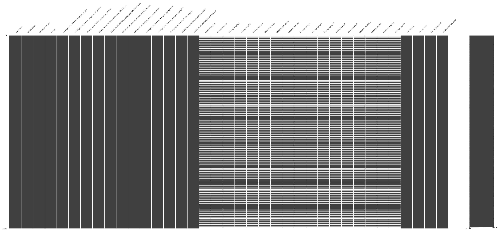
1. Nullity Plot(s)
for country, regions in country_region.items():
num_regions = len(regions)
ncols = 2
nrows = math.ceil(num_regions/ncols)
fig, axes = plt.subplots(nrows=nrows, ncols=ncols,
figsize=(12, 4 * nrows))
fig.suptitle(f"Missing Data Overview: {country}", fontsize=16, fontweight="bold")
if num_regions == 1:
axes = [axes]
else:
axes = axes.flatten()
for i, region in enumerate(regions):
working_df = pd.read_csv(f"./{country}/raw_{region}.csv")
msno.matrix(working_df, fontsize=4, label_rotation=45, ax=axes[i], sparkline=False)
axes[i].set_title(f"Region: {region}", y=-0.25,fontsize=12)
for j in range(i + 1, len(axes)):
axes[j].axis('off')
plt.tight_layout()
plt.show()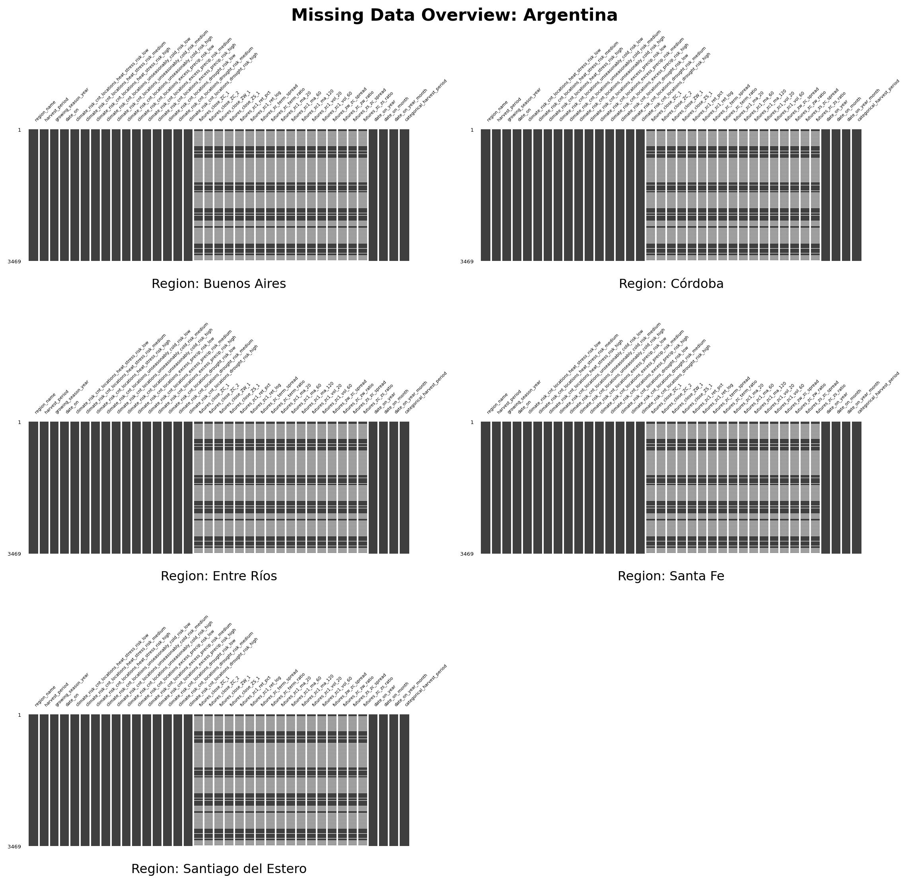
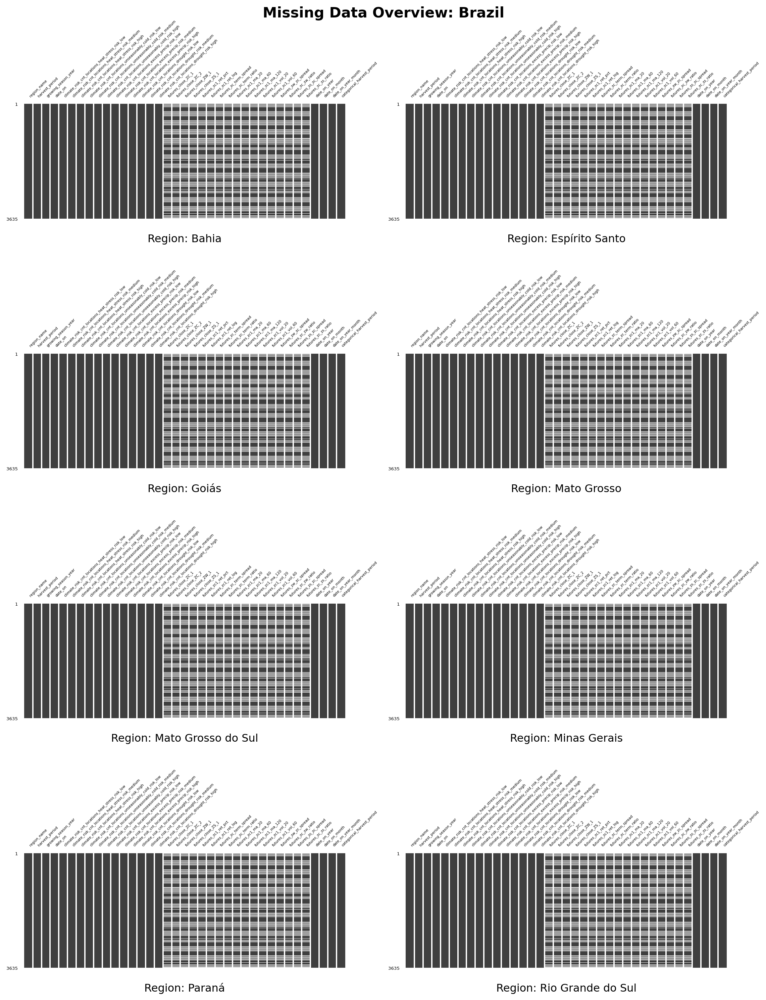
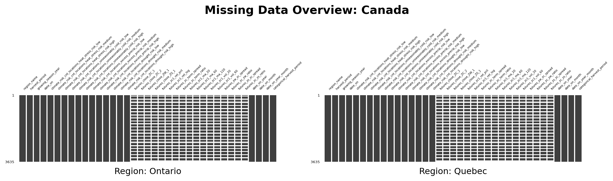
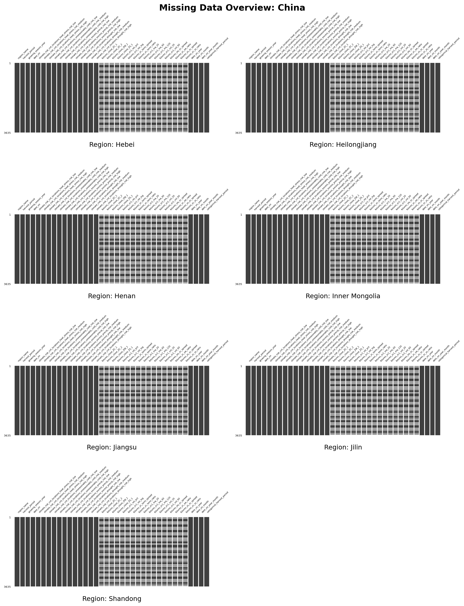
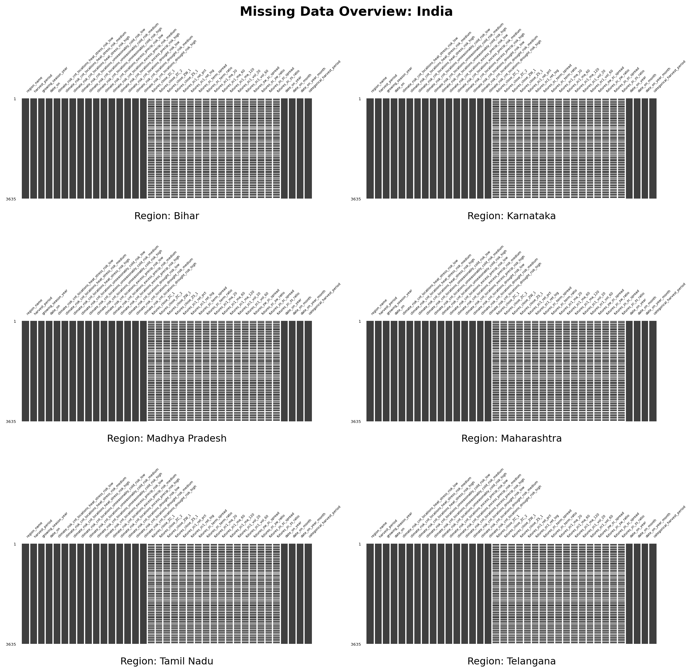
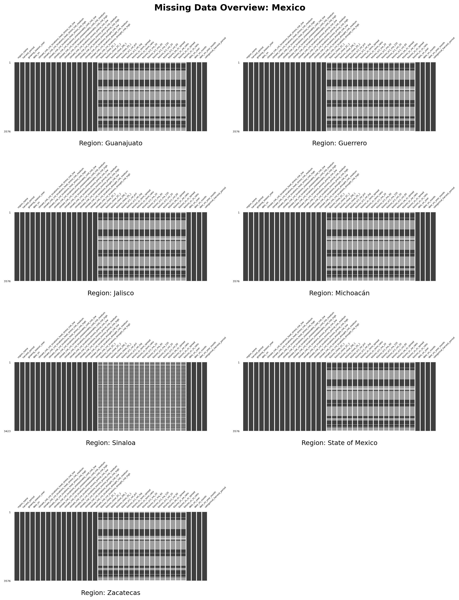
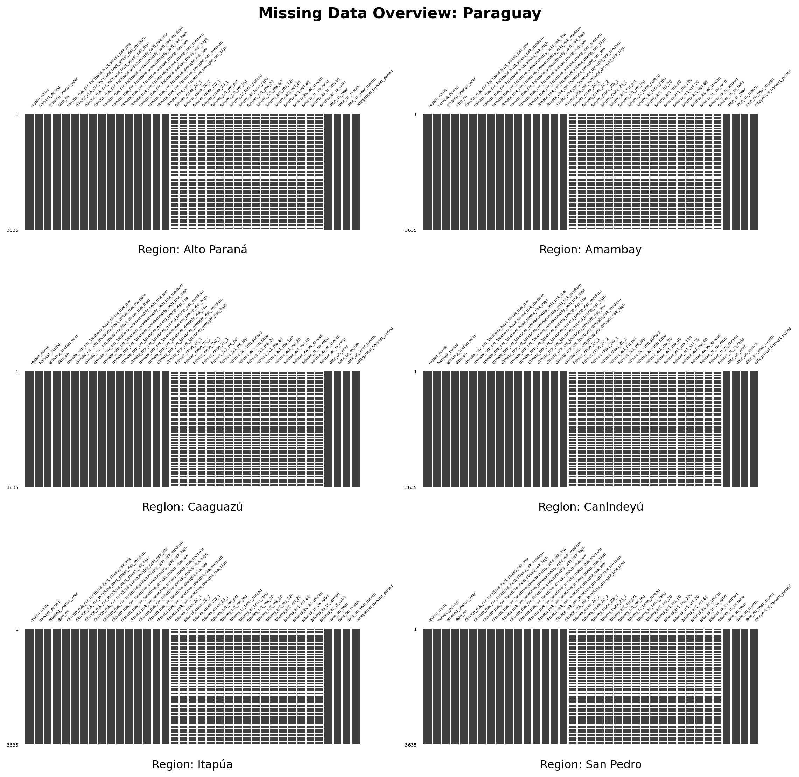
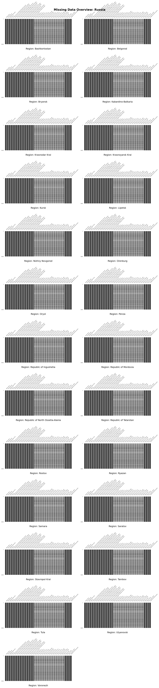
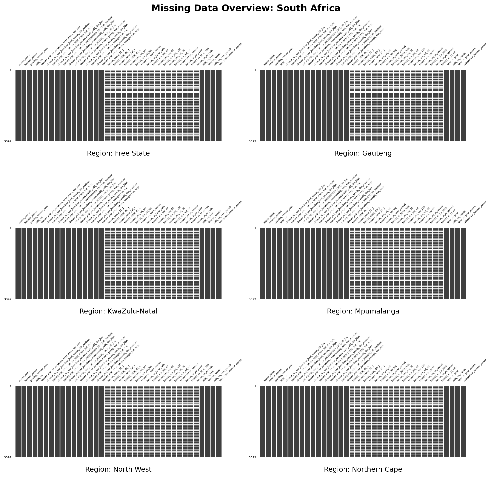

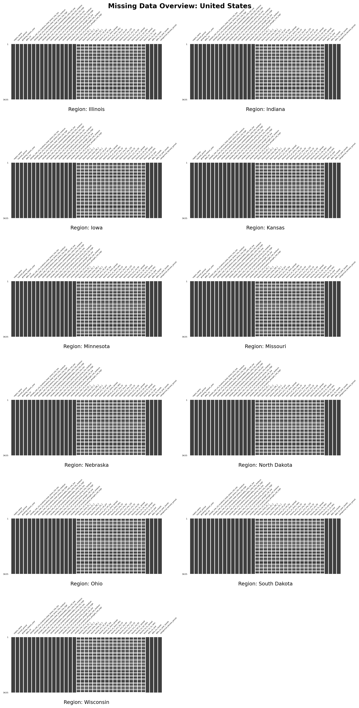
2. Time Series Plot(s)
- Check harvest period to cluster them.
# selected_cols = df_cols_needed.copy()
# # cols_to_remove = ['region_name', 'harvest_period', 'growing_season_year', 'date_on_year', 'date_on_month', 'date_on_year_month']
# nonan_cols = [col for col in selected_cols if col.startswith('climate')] + ['date_on', 'categorical_harvest_period']
# nan_cols = [col for col in selected_cols if col.startswith('futures')] + ['date_on']
# regions = country_region['Argentina']
# num_regions = len(regions)
# ncols = 3
# nrows = math.ceil(num_regions/ncols)
# fig, axes = plt.subplots(nrows=nrows, ncols=ncols,
# figsize=(12, 4 * nrows))
# fig.suptitle(f"Harvest Seasons: Argentina", fontsize=16, fontweight="bold")
# if num_regions == 1:
# axes = [axes]
# else:
# axes = axes.flatten()
# for i, region in enumerate(regions):
# working_df = pd.read_csv(f"./Argentina/raw_{region}.csv")
# axes[i].plot(working_df['date_on'], working_df['categorical_harvest_period'],
# color='darkgreen', linewidth=2)
# # Formatting the individual subplot
# axes[i].set_title(f"Region: {region}", fontsize=12)
# axes[i].set_ylabel("Harvest State")
# axes[i].grid(True, alpha=0.3)
# axes[i].tick_params(axis='x', rotation=45)
# for j in range(i + 1, len(axes)):
# axes[j].axis('off')
# plt.tight_layout()
# plt.show()